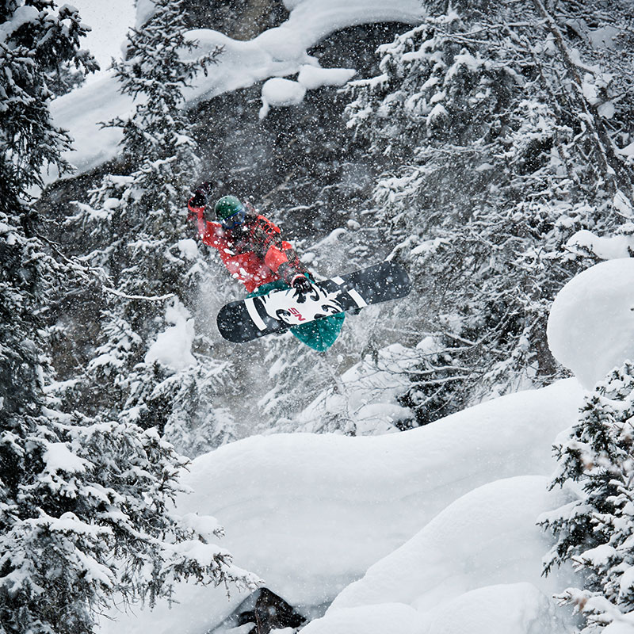

<div id="content">
  <div id="main">
    <div class="container">
      <div class="one_third">
        
      </div>

     <div class="two_third last">
						<h1>Taylor Pfaff</h1>
						<div><span style="font-family: Helvetica;"><a href="https://youtu.be/-jx-_OHra8I">CLICK HERE TO SEE TAYLOR RIDE</a></span> </div>
						<div><strong><br /></strong> </div>
						<div><strong style="font-family: Helvetica;">MEET TAYLOR...&nbsp;</strong><span>A Colorado native, Taylor moved out west to the mountains of British Columbia in search of powder, pillows, and good times. When not hunting for powders,     Taylor spends the offseason working in the Oregon wine industry and enjoying time with family and friends.</span>							</div>
						<div><span><br /></span> </div>
						<div><span><strong style="font-family: Helvetica;">TAYLOR'S FAVORITE NS BOARD IS...&nbsp;</strong></span><span>The Ripsaw. True twin,     amplified camber combined with the classic NS Rocker make this the most versatile board I've ever ridden. The Ripsaw can shred everything. From jibs     and the biggest jumps in the park all the way to big mountain lines in AK the Ripsaw can handle it all.</span>
						</div>
					</div>
      <hr>
  </div>
</div>